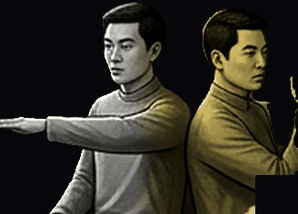

Truce

« Do we have an agreement? »
Scales' Oil Equilibrium.
- STR6
- DEX8
- INT8
- WIS7
- CHA8
- CON6
- Formula
- B(t) = ∫₀ᵗ α(t−s) · φ(s) ds
- Appearance
- Twin blokes, synced moves, keen, balancer.
- Faction
- Grey · Yellow · Factualist · Second-Wave Offspring · ▲ 🦀 ⚖️ — Deals & Symmetry · Consent & Trade.
- Masks
- White Knight · Scales · Anal Market · The Two Cheeks.
- Profile
- Harmonious balancers — keen twins with grey-yellow equilibrium. High DEX and INT sync their scales.
- Powers
- Scales' Oil Equilibrium, Stat Shift, Balanced Flow. Twin's Oil Concord — shared strength, allied bond. Their oil weighs fate in tandem — a twin-born harmony trembling under strain.
- Maskomatics
- Temperance (XIV) · Tiferet · Mithraic Heliodromus · Plato's Phaedo soul balance · Plotinus' oil tweak flow control · Kabbalah's Scales in Lamed might weigh new pacts.
- Hexagram
- ♊ Hexagram 12 — Standstill (否) · "Heaven blocks earth, Stagnation, temporary."
- Mini-stories
- Souk of Red Dreams.
- Krewsmatics
- Scales + Red Gun = Alternative.
Puck You!: Two mirrored paddles, one grey and one yellow.
Puck You! : Deux raquettes en miroir, l’une grise, l’autre jaune.
PUCK YOU!© Korhogo™ · Korhogo Fauna™ · Fauna Masks™ — any content, any form, any medium. Mauk Tenieb.